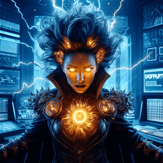

-
Seu Clope

Descrição
Seu Clope é conhecido por sua firme convicção de que as novas linguagens de programação são apenas modismos passageiros e desnecessários, e ele se recusa a adotar qualquer uma delas, alegando que nada pode superar a robustez e a eficácia do COBOL para resolver problemas reais. Seu estilo de trabalho é metódico e preciso, e ele valoriza acima de tudo a estabilidade e a confiabilidade em seu código
-
Vamplena

Descrição
Apesar de seu objetivo nobre de se tornar sênior, ela luta com o dilema ético de seu poder, pois teme tornar-se dependente da expertise alheia em vez de desenvolver a sua própria. Sua jornada é marcada por um intenso desejo de autodesenvolvimento e pela busca de um equilíbrio entre aprender com os outros e cultivar seu próprio talento genuíno.
-
Jubiléia

Descrição
Uma jovem desenvolvedora em treinamento, Jubiléia já se destaca por sua peculiaridade: uma aversão declarada a temas claros em ambientes de programação. Ela tem uma preferência intensa por temas escuros, que considera mais suaves e agradáveis para seus olhos, especialmente durante longas sessões de codificação à noite.
-
Tempestade Solar
Descrição
No universo dos desenvolvedores, Tempestade Solar é conhecida como uma das vilãs mais formidáveis. Ela tem o poder de gerar explosões solares massivas que perturbam as redes de comunicação, afetando a internet e todos os dispositivos conectados. Esses surtos solares causam caos no mundo digital, desestabilizando servidores, interrompendo conexões e causando perda de dados críticos.
-
Loggineto

Descrição
Ele possui a capacidade única de influenciar e redirecionar fluxos de dados apenas com a força de sua vontade, permitindo-lhe acessar e alterar informações de qualquer dispositivo conectado à rede. Seu domínio sobre a segurança digital o torna um adversário formidável para qualquer equipe de TI, pois ele pode causar falhas, acessar dados confidenciais e criar barreiras de segurança quase impenetráveis.
-
Professor Cafeze

Descrição
Líder dos X-devs é um mentor para desenvolvedores iniciantes, guiando-os com sua mente excepcional e uma xícara de café sempre à mão. Ele possui habilidades telepáticas que lhe permitem transmitir conhecimento de programação diretamente para a mente dos novatos, acelerando sua aprendizagem.